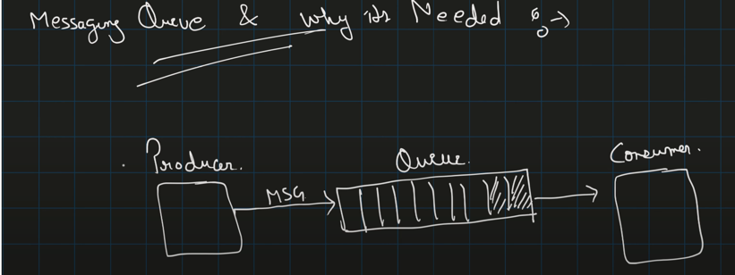

Distributed Messaging Queues: Kafka vs RabbitMQ¶
1. Overview¶
This guide provides an overview of distributed messaging systems like Apache Kafka and RabbitMQ, comparing their architectures, use cases, and key differences from an interview perspective, particularly in high-scale systems.
2. Messaging Queue Basics:¶
-
Producers and Consumers:
- Producers: Send messages to the queue.
- Consumers: Retrieve messages from the queue for processing.
- Queues: Store messages until they are consumed, ensuring decoupled communication between services.
-
Asynchronous Processing:
- Messaging queues enable asynchronous, event-driven architectures, reducing latency and improving system performance by decoupling services.
3. Retry Capabilities and Failure Handling:¶
-
Retry Mechanism:
- Queues often incorporate built-in retry mechanisms to handle message failures. In case of temporary failures, messages can be reprocessed, ensuring reliable delivery.
-
Dead Letter Queues (DLQ):
- Messages that fail repeatedly can be sent to a DLQ for investigation, preventing bottlenecks in the system.
4. Pace Matching and Load Balancing:¶
-
Production and Consumption:
- Distributed messaging queues help match production and consumption speeds, ensuring that faster-producing services don’t overwhelm slower consumers.
-
Load Balancing:
- Queues distribute the workload across multiple consumers, providing fault tolerance and preventing single points of failure.
5. Pub/Sub vs. Point-to-Point:¶
-
Pub/Sub (Publish/Subscribe):
- In this model, multiple consumers can subscribe to a topic, allowing them to receive the same messages. Useful for broadcasting events.
- Use Case: Real-time notifications, logging, event-driven systems.
-
Point-to-Point:
- Each message is consumed by only one consumer, ensuring single-consumption.
- Use Case: Task distribution, work queues.
6. Kafka Architecture:¶
-
Brokers, Topics, and Partitions:
- Kafka is built around a distributed log, using brokers to manage topics and partitions. Messages are pulled from partitions by consumers, ensuring scalability and fault tolerance.
- Consumers: Organized in consumer groups, allowing for load distribution across consumers.
- Partitions: Kafka uses partitions for horizontal scalability, enabling multiple consumers to read from the same topic concurrently.
-
Scalability:
- Kafka is optimized for high throughput and scalable across multiple nodes, making it suitable for handling large-scale data pipelines, event sourcing, and stream processing.
7. RabbitMQ Features:¶
-
Message Routing with Exchanges:
- RabbitMQ uses exchanges to route messages to different queues based on routing keys. There are different types of exchanges, such as:
- Direct Exchange: Routes messages to queues that match the routing key.
- Fanout Exchange: Broadcasts messages to all bound queues.
- Topic Exchange: Routes messages to queues based on pattern matching.
- RabbitMQ uses exchanges to route messages to different queues based on routing keys. There are different types of exchanges, such as:
-
Push-Based Model:
- Unlike Kafka’s pull model, RabbitMQ uses a push-based approach, actively delivering messages to consumers, making it more suited for real-time messaging but potentially causing backpressure.
8. Key Differences: Kafka vs. RabbitMQ¶
-
Message Delivery Model:
- Kafka uses a pull-based approach, with consumers actively pulling messages from the queue, which is ideal for high-throughput, low-latency systems.
- RabbitMQ uses a push-based model, pushing messages to consumers, making it effective for real-time, low-latency tasks but potentially challenging for scalability.
-
Persistence and Ordering:
- Kafka provides message persistence with ordering guarantees within partitions, making it suitable for event sourcing and logs.
- RabbitMQ focuses more on flexibility in routing messages but lacks Kafka’s native persistence model.
-
Scalability:
- Kafka excels at horizontal scalability, handling millions of messages per second, while RabbitMQ is more lightweight and easy to manage for smaller-scale, real-time communication tasks.
- 
- Pace Matching:

- P2P & Pub/Sub:
- How Message Queue Works:
- Kafka:
- Kafka Architecture:

- Topic 1:
- Rabbit MQ:
Summary of Key Differences:¶
| Aspect | Kafka | RabbitMQ |
|---|---|---|
| Message Delivery | Pull-based | Push-based |
| Scalability | Highly scalable, partitions for load-sharing | Limited by resource contention |
| Use Case | Large-scale data pipelines, event streaming | Real-time messaging, task queues |
| Persistence | Persistent message log with ordering | Optional persistence, no ordering guarantees |
| Routing | Simple, topic-based routing | Flexible, supports complex routing |
| Latency | Optimized for high throughput, low latency | Better for low-latency, small-scale systems |
Summary:¶
Choosing between Kafka and RabbitMQ depends on the system requirements: - Kafka: Best for high-throughput, horizontally scalable systems handling large volumes of event streams or data pipelines. - RabbitMQ: Ideal for low-latency, real-time messaging with flexible routing needs in small to medium-scale applications.